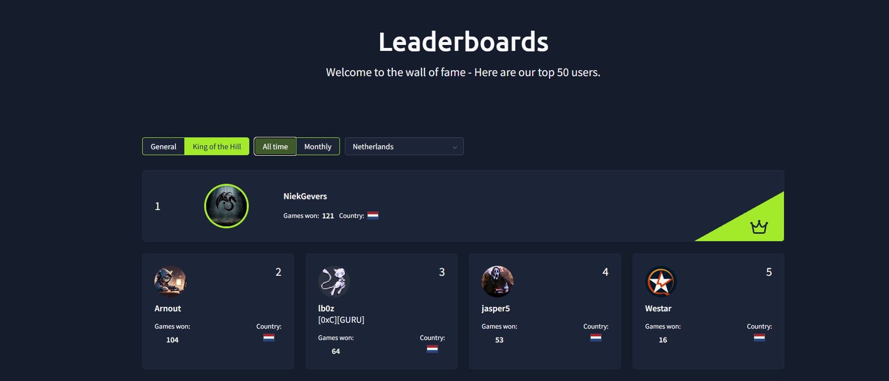

TryHackMe / Linux security
Rootkit Research and Development
I spent an extended period playing TryHackMe King of the Hill, where players compete to gain and hold control of a shared lab machine. Once multiple players have privileged access, their scripts and persistence tools can compete for control of the same system. In my matches, that included techniques associated with rootkits. This project explores what those competing changes leave behind for an investigator. TryHackMe's overview of the game

Recognising persistence in user space
I built a user-space persistence tool in C for King of the Hill matches. It reacts to changes in the game's ownership file. It also adopts a process name that resembles a system service. That distinction matters when investigating an unfamiliar process. A convincing name says little about the executable behind it. The tool operates in user space.
Repeated changes to a privileged file are a reason to look at what wrote it and when. I would correlate file-change events with process execution and available audit records, then compare the executable's path and integrity with a known-good baseline. Each observation on its own can have an ordinary explanation. The sequence gives a better account of what happened.
Source excerpt
#define _GNU_SOURCE
#include <ctype.h>
#include <errno.h>
#include <fcntl.h>
#include <poll.h>
#include <signal.h>
#include <stdio.h>
#include <stdlib.h>
#include <string.h>
#include <sys/file.h>
#include <sys/inotify.h>
#include <sys/ioctl.h>
#include <sys/prctl.h>
#include <sys/stat.h>
#include <unistd.h>
#include <linux/fs.h>
#ifndef KING_PATH
#define KING_PATH "/root/king.txt"
#endif
#ifndef KING_USERNAME
#define KING_USERNAME "lb0z"
#endif
static const char *g_user = KING_USERNAME;
static const char *g_path = KING_PATH;Deciding which evidence to trust
Once root access is contested, process listings and logs from that host deserve less weight. If I suspected a rootkit in a real incident, I would isolate the host, preserve the available evidence and compare local observations with logs collected elsewhere. For kernel-level suspicions, I would also compare the system against a trusted baseline from outside the affected installation.
Recovering the game objective can feel like a reset, even though the host can still contain changes made earlier. In an incident where I could no longer establish system integrity, I would rebuild from a trusted image and rotate credentials that may have been exposed.
What I took away
KoTH gave me a concrete scenario for thinking about detection engineering. I would monitor unexpected writes to sensitive files and collect process telemetry off the host. That gives an investigator something to compare against when the system's own view becomes unreliable.